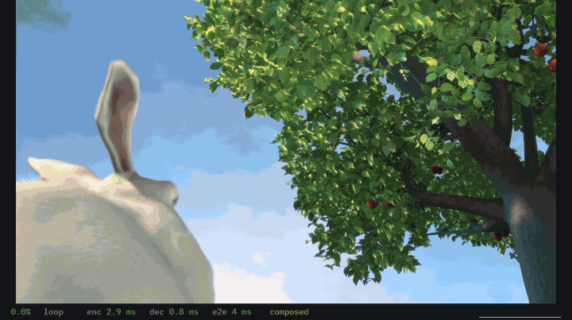

Voice, text chat and screen sharing for a few friends on Windows, built for the lowest delay.
Download
Version 0.2.3. Windows 10 version 2004 or later, or Windows 11, 64-bit, with a DirectX 12 graphics driver. Older versions are on the releases page.
The exe is not code signed yet, so SmartScreen warns once (More info, then Run anyway), and Smart App Control on Windows 11 blocks it.
Using it
Press Host, then Copy, and send the invite to your friends. They paste it under Join a room, and later rejoin from Known hosts. An invite lets in one friend within 10 minutes; for a group, switch it to anyone, 24 h, and copy it again. It carries your internet address, so never post it in public.
If a friend cannot get in, Booth gives them a code for the host to paste under the invite. Failing that, forward UDP 41000 to the host's PC, or use Tailscale or WireGuard.
The first time, Booth asks for administrator rights to add its firewall rule. Use a wired or USB headset: Booth has no echo cancellation. Push to talk is on by default: hold Right Ctrl to talk. Hotkeys work while a game has focus, unless the game runs as administrator. See and change them in Settings.


Features
- Voice in 5 ms Opus frames, with a jitter buffer that starts at the minimum.
- Screen sharing with GPU encoding, up to 1440p at 120 fps. On Intel graphics Booth encodes in software for now, up to 1080p at 60 fps.
- Median capture to display on my PCs: about 5 ms on one PC, 22 to 32 ms over the internet.
Security
Booth has no accounts and no cloud: voice, video and chat go straight between each friend's PC and the host's, encrypted even on a LAN. Each connection starts with a Noise handshake in which both sides prove who they are. The code has had no outside audit yet. The host decrypts and forwards everything in the room, so only join a host you trust. Two public STUN servers, Cloudflare's and Google's unless you change them in Settings, see your address and nothing else.
MIT or Apache-2.0. The code, how to build it and every third-party license are on GitHub. The film in the screen share is Big Buck Bunny, (c) copyright 2008, Blender Foundation, www.bigbuckbunny.org, under CC BY 3.0.